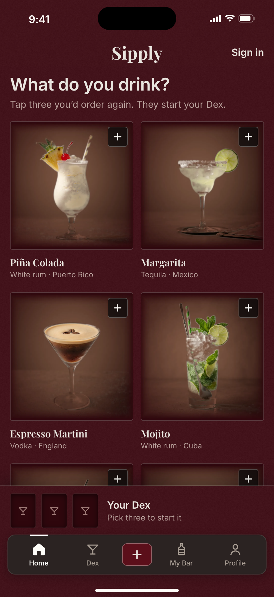
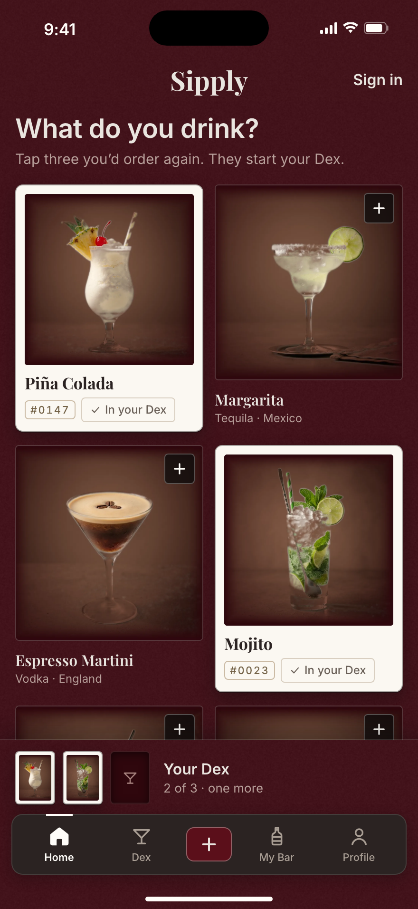
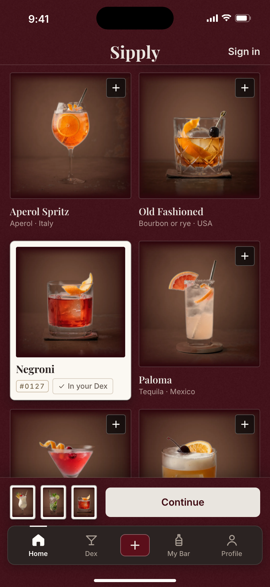
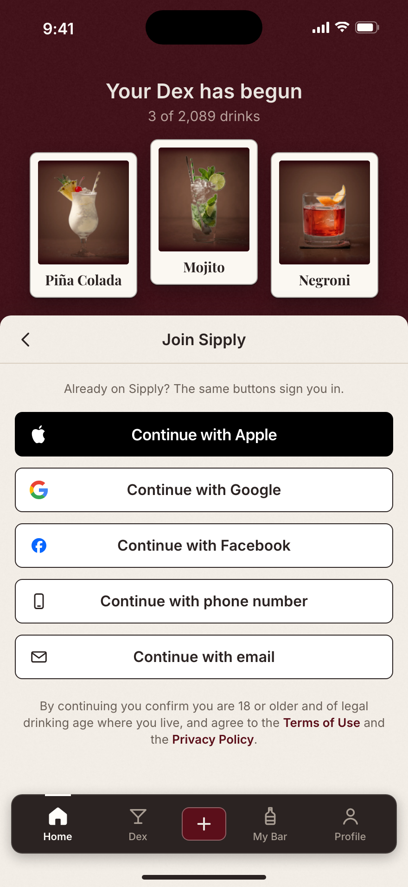

1. The first screenA question, not a form. Sign in sits top right.

2. Two pickedEach tap mounts the print in bone; the tray fills.

3. Three pickedThe tray's words become Continue, in place.

4. How to sign inYour three above the sheet; Apple first.